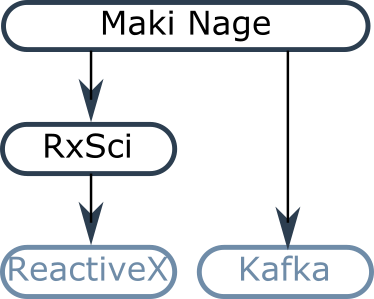

Rationale
Maki Nage is a framework designed to work on streaming data. A Maki Nage application takes a stream of events as input, applies some transformations on these events, and returns another stream of events:
{kind=link}
import rx
import rxsci as rs
source = [1, 2, 3, 4, 5, 6, 7]
rx.from_(source).pipe(
rs.state.with_memory_store(rx.pipe(
rs.data.roll(window=3, stride=3, pipeline=rx.pipe(
rs.math.mean(reduce=True),
)),
)),
).subscribe(
on_next=print
)
Maki Nage leverages two other projects as a foundation:
ReactiveX, and more especifically RxPY, its python implementation.
The structure of Maki Nage is the following one:
{kind=link}
All transformation functions in Maki Nage are ReactiveX operators. RxSCi is a ReactiveX extension library, dedicated to data manipulation. The combination of ReactiveX and RxSci makes it very easy to deal with streams of events.
Kafka is used for multi-core and multi-machine scalability. Thanks to its usage, it is easy to start working on a relatively small development machine, then scale on a bigger machine or a small cluster, and finally scale on a cloud platform. All these steps with the same code base.
The key advantages of Maki Nage are:
Ease of use, thanks to declarative, extensible python APIs.
Code reuse from development up to deployment.
Scalability.
A unified paradigm for streaming and batch processing.